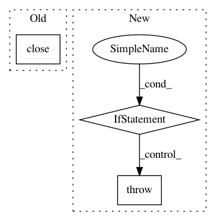

44bd049613c2e0fb70d971f2c35775841cbf2ef6,pyemma/coordinates/data/feature_reader.py,FeatureReaderIterator,_next_chunk,#FeatureReaderIterator#,333
Before Change
self._t += shape[0]
if self._t >= self.trajectory_length() and self._itraj < len(self._data_source.filenames) - 1:
self.close()
self._t = 0
self._itraj += 1
self._create_mditer()
After Change
chunk = next(self._mditer)
except StopIteration as si:
// TODO: why we have to return something here? This makes no sense, but is somehow required by LaggedIterator/Iterable
if "too short" in si.message and self._itraj < self._data_source.ntraj - 1:
self._next_file()
return np.empty(0)
else:
raise
shape = chunk.xyz.shape
self._t += shape[0]
In pattern: SUPERPATTERN
Frequency: 3
Non-data size: 3
Instances
Project Name: markovmodel/PyEMMA
Commit Name: 44bd049613c2e0fb70d971f2c35775841cbf2ef6
Time: 2016-07-28
Author: m.scherer@fu-berlin.de
File Name: pyemma/coordinates/data/feature_reader.py
Class Name: FeatureReaderIterator
Method Name: _next_chunk
Project Name: uber/petastorm
Commit Name: 6e127316edc8118049ca29ff94e2f4c6d34580dc
Time: 2018-07-31
Author: selitvin@users.noreply.github.com
File Name: petastorm/codecs.py
Class Name: CompressedImageCodec
Method Name: encode
Project Name: pysb/pysb
Commit Name: b9d8388cdd242a8c660d7a6de37d2374d048b649
Time: 2016-03-08
Author: bachmanjohn@gmail.com
File Name: pysb/kappa.py
Class Name:
Method Name: run_static_analysis